Boss Salmonids
Steelhead
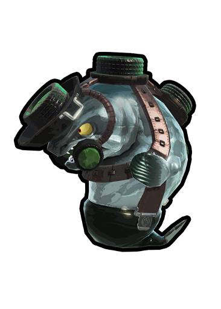
- HP - 1000
- The Steelhead's bomb has 300hp and will insta kill the Steelhead once splatted.
- When a player splats the bomb, it can also damage nearby enemies.
- A direct hit from it's bomb does 180 damage which is an instant kill.
- Any damage to it's bomb is kept on subsequent bombs.
Drizzler
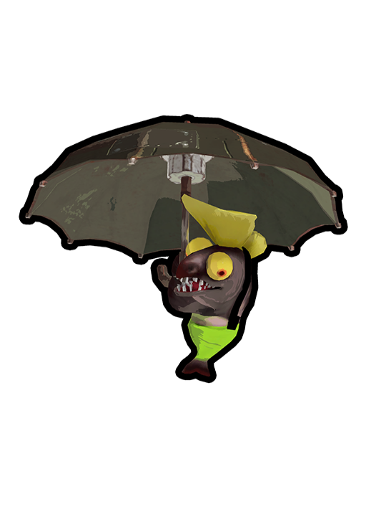
- HP - 900
- The drizzler's missle has 100hp
- The rain does 0.3 damage per frame, which equates to 18 damage per second
- Drizzler's have set points within a map that it can jump to. After sending two missles out, it will jump to the point closest to the nearest player.
- Damaging the missle will send it opposite from where you hit it. This can be used to instantly kill the Drizzler, or damage other Salmonoids.
- While drizzlers are in the air, you can shoot them from below.
Big Shot
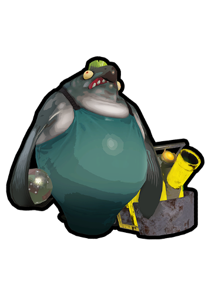
- HP - 1,200
- The cannon ball sends two shock waves that each do 40 damage.
- You can dodge the shockwaves by jumping over them.
- Only one Big Shot cannon will spawn per wave. Every Big Shot that spawns will go to that cannon.
- The cannon can fire Golden Eggs back to the basket. This can be incredibly helpful but too much reliance can leave you vulnerable.
Flyfish
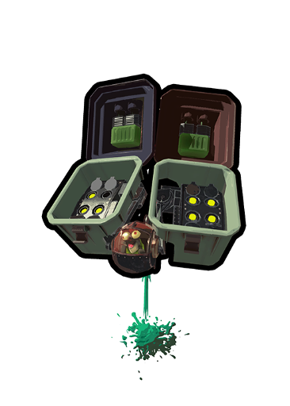
- the devil
- HP - 360
- A missle from a flyfish deals 150 on direct contact, making it an instant kill. The ink from it's jet propulsion can also damage you.
- It sends 4 missiles from each missile launcher and can lock on to 2 players
-
The following specials can destroy the launchers:
- Crab Tank (cannon shots)
- Reefslider (if at level or above)
- Triple Splashdown
- Inkjet
- The following specials can destroy the cockpit:
- Killer Wail
- Triple Inkstrike
- Booyah Bomb
- Kraken Royale (jump while under the cockpit)
- The Explosher and Grizzco Dualies dodge roll can destroy launchers, and the Grizzco Slosher and Grizzco Splatana can destroy the cockpit.
Steel Eel
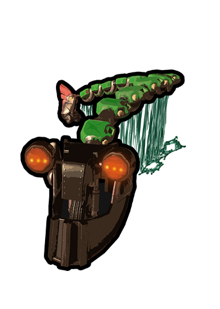
- HP - 600
- Each collision with it's body does 50 damage. You can still be damaged during it's death animation.
- If it's aggro is on you, cordinate your movement to lead it's head away from and expose it's backside to other players.
- You can slide through the ink sprayers with Reefslider.
- Be careful not to lure Steel Eel's too close to the basket, as it can quickly become overwhelming.
- Bombs explode on contact with it's body.
Scrapper
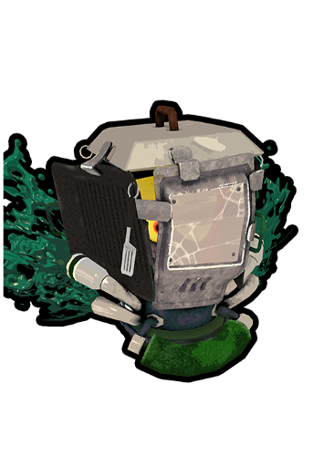
- Sheild HP - 600
- Driver HP - 500
- The scrapper does 30 damage when it runs into you.
- When a scrapper is shot, it will stop and turn to face the player.
- If the scrapper is stunned, it takes 5 seconds for it's sheild to repair. If it's not stunned, it takes 2 seconds after the last shot before it starts moving again.
- It can be really helpful to stun a Scrapper with it's back facing another player.
- Generally keep in mind where it's back is when you're attempting to stun it. Avoid backing it into a wall where it becomes difficult to actually damage the driver.
Fish Stick
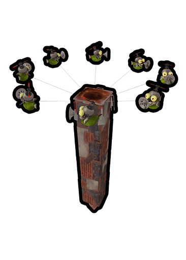
- HP - 32 (per smallfry, 8 total)
- Each map has set locations for Fish Sticks to land
- If all the smallfry are splatted before the Fish Stick lands, the piller breaks apart.
- Do not ignore sticks that land close to the basket. You can choose to ignore them if they are far from it.
Flipper-Flopper
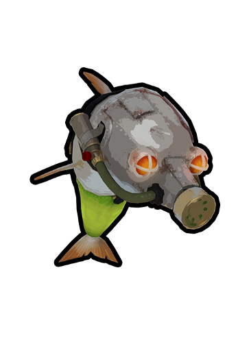
- HP - 1200 (armored)
- HP - 300 (no armor)
- Any player within it's ring when it dives is instantly splatted.
- Bosses splatted within the ring can help paint it
- It can be damaged any time it's above ink, which includes when it's head starts poking out.
- Make sure these aren't above you while climbing walls.
Maws
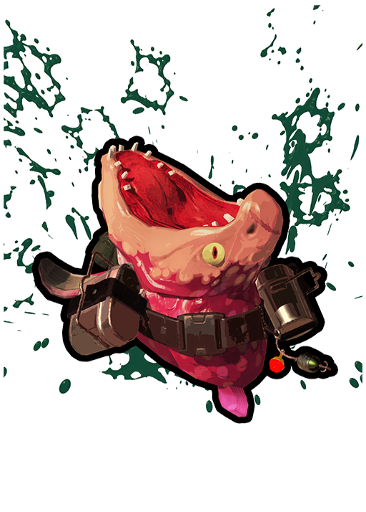
- HP - 1200
- Swallowing a bomb instantly splats it.
- Any player is instantly splatted if caught in their jaws.
- The Grizzco Splatana is the only weapon that can damage a Maws while it's submerged.
- These are one of the easier, low-risk bosses to lure.
- It is not recommended to use specials for Maws. Other bosses should take priority.
- Maws can still splat players when they've just activated Inkjet or Booyah Bomb
Slammin' Lid
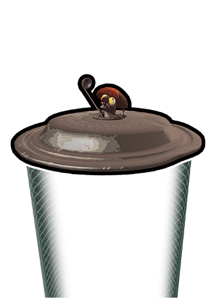
- HP - 500
- If a player passes through it's force field, it will slam down, instantly splatting anything - including salmonids - under it.
- If a player is on top of the saucer for too long, it will swing a laddle to knock them off.
- Bombs explode on contact with the force field
- When defeated, it will damage enemies under it when as it lands.
- It can be really helpful to use these to splat other bosses.
Stinger
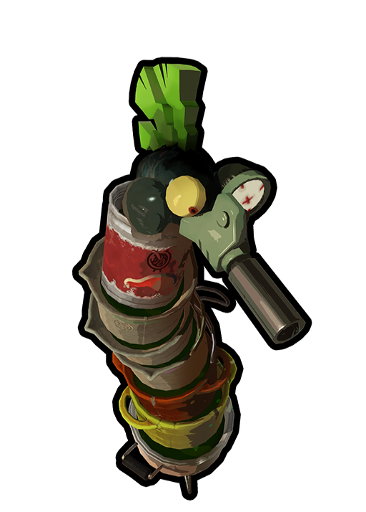
- HP - 60 per pot (7 pots totaling to 420 ehehheheheh)
- It's jet attack, similar to the Killer Wail, will attack the furthest player with 1 damage per frame.
- Sustained contact with the jet will splat a player within 1.4 seconds
- Incredibly important to splat asap
- Priortize these if you have a high DPS weapon